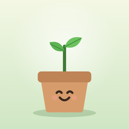

Dein Pflanzen-Kumpel für Balkon, Garten und Wohnung
Topfkumpel erinnert dich ans Giessen und Düngen, passt den Plan an Topf, Standort und Wetter an und erklärt Schritt für Schritt, wie du Gemüse, Kräuter und Obst anbaust. Gemacht für die Schweiz, Deutschland und Österreich.
Du hast eine Frage, einen Fehler gefunden oder eine Idee? Schreib mir, ich antworte so schnell ich kann.
topfkumpel.app@outlook.comPrüf in den iPhone-Einstellungen unter Mitteilungen › Topfkumpel, ob Mitteilungen erlaubt sind. In der App kannst du unter Einstellungen die Uhrzeit der Erinnerung wählen. Im Fokus- oder Schlafmodus kommen Mitteilungen erst später.
Öffne auf dem alten iPhone Einstellungen › Daten sichern und erstelle einen Sicherungs-Code. Schick ihn dir selbst, zum Beispiel per Nachricht oder Mail, und füge ihn auf dem neuen iPhone unter Daten sichern › Sicherung laden ein.
Nein. Topfkumpel ist gratis, ohne Werbung und ohne Abo.
Nein. Alles wird nur auf deinem iPhone gespeichert. Es gibt kein Konto und keinen Server, der deine Daten sammelt.
Wenn du in den Einstellungen «Regen automatisch erkennen» einschaltest und deinen Ort eingibst, fragt die App beim Öffnen das Wetter bei Open-Meteo ab. Ab 5 mm Regen gelten Pflanzen im Garten als gegossen.
In der App unter Einstellungen › Daten kannst du alles löschen. Auch wenn du die App vom iPhone entfernst, werden alle Daten gelöscht.